ArgoCD Installation on OpenShift - Quick Start
To create an OpenShift version of the ArgoCD installation guide shown in the image, you need to adjust the Kubernetes commands for OpenShift's environment. OpenShift uses oc commands instead of kubectl and has some differences in handling resources and services. Here’s a revised version for OpenShift:
ArgoCD Installation on OpenShift - Quick Start
Argo CD is a declarative continuous delivery tool for Kubernetes applications. It uses the GitOps style to create and manage Kubernetes clusters. When any changes are made to the application configuration in Git, Argo CD will compare it with the configurations of the running application and notify users to bring the desired and live state into sync.
Argo CD has been developed under the Cloud Native Computing Foundation’s (CNCF) Argo Project — a project, especially for Kubernetes application lifecycle management. The project also includes Argo Workflow, Argo Rollouts, and Argo Events. Each solves a particular set of problems in the agile development process and makes the Kubernetes application delivery scalable and secure.
Upgrade Packages & Install Prerequisites
Install ArgoCD
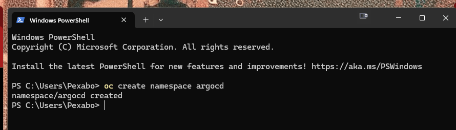
oc create namespace argocd
oc apply -n argocd -f https://raw.githubusercontent.com/argoproj/argo-cd/stable/manifests/install.yaml
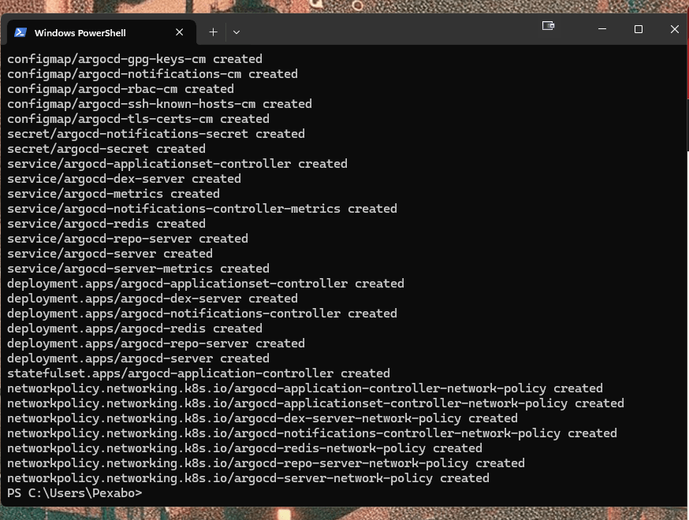
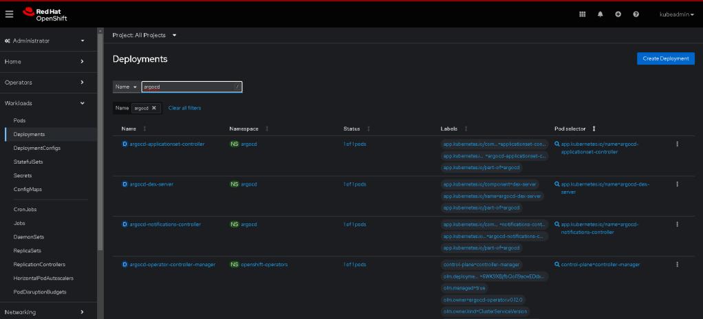
Change Service to NodePort
OpenShift doesn’t typically expose services as NodePort by default, and it's more common to use a Route. However, if you want to use NodePort, you can still do it as shown below:
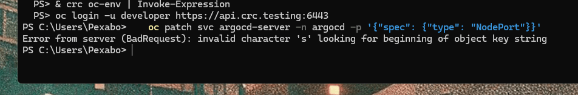
- Patch the service to change the type:
oc patch svc argocd-server -n argocd -p '{"spec": {"type": "NodePort"}}'
- Alternatively, expose the service using a Route:
oc expose svc argocd-server -n argocd --port=http
This command creates an OpenShift Route to the Argo CD server, allowing access through the OpenShift router.
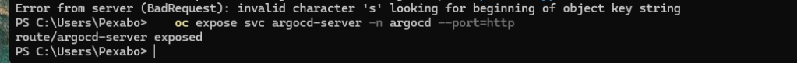
Fetch Password
To retrieve the ArgoCD initial admin password, use:
oc get secret argocd-initial-admin-secret -n argocd -o jsonpath="{.data.password}" | base64 -d
By following these steps, you should be able to install and configure ArgoCD in an OpenShift environment.
$encodedPassword = oc get secret argocd-initial-admin-secret -n argocd -o jsonpath="{.data.password}"
$encodedPassword = oc get secret argocd-initial-admin-secret -n argocd -o jsonpath="{.data.password}"; [System.Text.Encoding]::UTF8.GetString([System.Convert]::FromBase64String($encodedPassword))
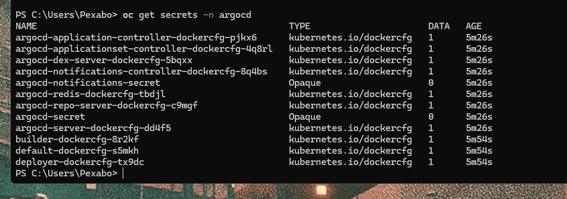
The error you're encountering indicates that the argocd-initial-admin-secret secret could not be found in the argocd namespace. This issue can arise due to several reasons:
-
Namespace or Secret Name Typo: Ensure that both the namespace (
argocd) and the secret name (argocd-initial-admin-secret) are correctly typed. -
ArgoCD Not Fully Installed: If the ArgoCD installation wasn't successful or isn't fully completed, the secret might not yet be created.
-
Wrong Context or Cluster: Make sure that your OpenShift or Kubernetes context is correctly set to the cluster and project (namespace) where ArgoCD is installed.
Steps to Troubleshoot
-
Verify Namespace and Secret:
-
First, check if the
argocdnamespace exists and the secret is there:
oc get namespaces
Look for argocd in the output.
-
List Secrets in the Namespace:
-
If the namespace exists, list all secrets in the
argocdnamespace to verify the existence ofargocd-initial-admin-secret:
oc get secrets -n argocd
Look for argocd-initial-admin-secret in the output.
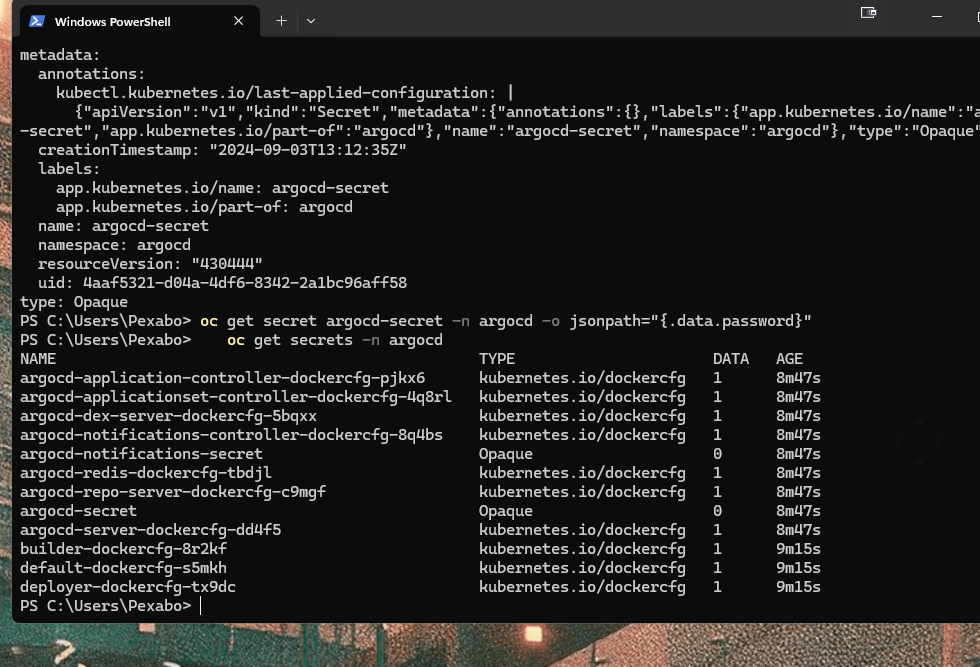
-
Check ArgoCD Installation:
-
If neither the namespace nor the secret is found, you might need to reinstall ArgoCD or check if it was correctly installed.
What to Do If the Secret Is Missing
If the argocd-initial-admin-secret is missing:
- Reinstall ArgoCD: You may need to redo the ArgoCD installation steps to ensure everything is properly set up.
If the namespace and secret are found but still not working:
- Check Your Context: Ensure your OpenShift context is set correctly:
oc project argocd
This command sets your context to the argocd namespace.
Corrected Command for PowerShell (After Verifying the Secret Exists):
If the secret does exist and you've corrected any namespace or context issues, then retry the PowerShell command:
$encodedPassword = oc get secret argocd-initial-admin-secret -n argocd -o jsonpath="{.data.password}"; if ($encodedPassword) { [System.Text.Encoding]::UTF8.GetString([System.Convert]::FromBase64String($encodedPassword)) }
This modification adds a check to ensure $encodedPassword is not null before attempting to decode it, avoiding the ArgumentNullException.
argocd-secret
$encodedPassword = oc get secret argocd-secret -n argocd -o jsonpath="{.data.password}"; [System.Text.Encoding]::UTF8.GetString([System.Convert]::FromBase64String($encodedPassword))
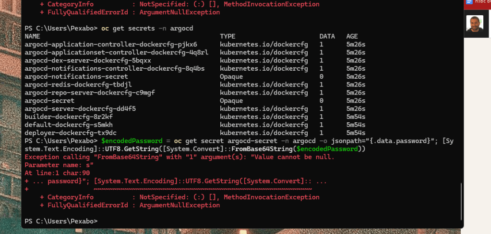
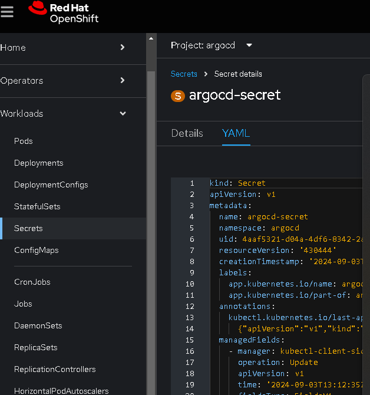
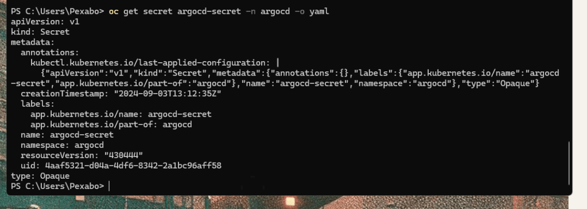
no password field
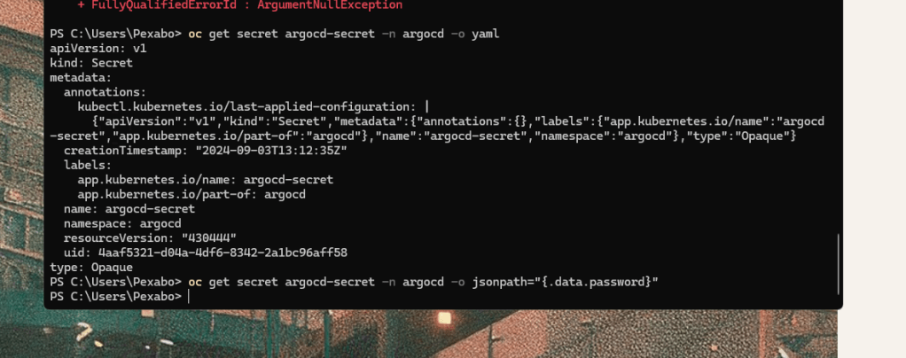
The error you're seeing again suggests that the $encodedPassword variable is null, meaning that the command to get the secret did not return a value. Here are some steps to troubleshoot and ensure the command works properly:
Steps to Troubleshoot
-
Verify the Secret's Existence and Content:
-
Run the following command to list all secrets in the
argocdnamespace to ensure the secretargocd-secretexists:
oc get secrets -n argocd
- If
argocd-secretis listed, let's see its full content to ensure it has thepassworddata:
oc get secret argocd-secret -n argocd -o yaml
-
This will output the entire YAML of the secret. Look under
datato confirm if there is apasswordfield. -
Check If the Secret Contains the Password Field:
-
If the
passwordfield exists but your initial command still does not retrieve the data, there could be a syntax issue or a problem with data retrieval. Let’s run a simplified command to just fetch the rawpassworddata:
oc get secret argocd-secret -n argocd -o jsonpath="{.data.password}"
-
This command should print the base64-encoded password. If this is empty or returns an error, then the
passwordfield does not exist or is empty. -
Decode the Password (Only If It Exists):
-
If the above command gives you a valid base64-encoded string, you can then proceed to decode it in PowerShell.
To make sure your decoding step is more robust and handles potential null values better, modify your PowerShell command like this:
$encodedPassword = oc get secret argocd-secret -n argocd -o jsonpath="{.data.password}";
if ($encodedPassword) {
[System.Text.Encoding]::UTF8.GetString([System.Convert]::FromBase64String($encodedPassword))
} else {
Write-Output "Password not found or is empty."
}
Summary of What to Do:
-
Verify the secret
argocd-secretexists. -
Check that it contains a
passworddata field. -
Ensure your commands correctly handle the potential absence of data.
If argocd-secret is not the correct secret name or doesn't have the password field, you may need to refer to your ArgoCD setup documentation or process to ensure everything is correctly configured.
No Password > Self Signed certificate it should be there
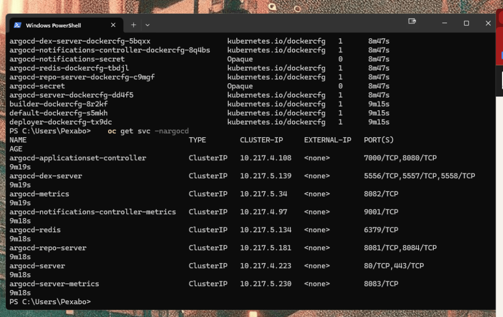
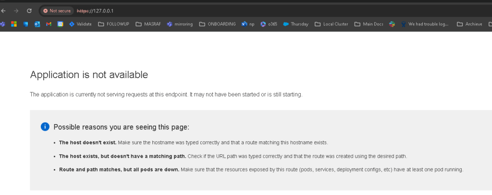
Creation errors > it could be trying to locate the same port ?
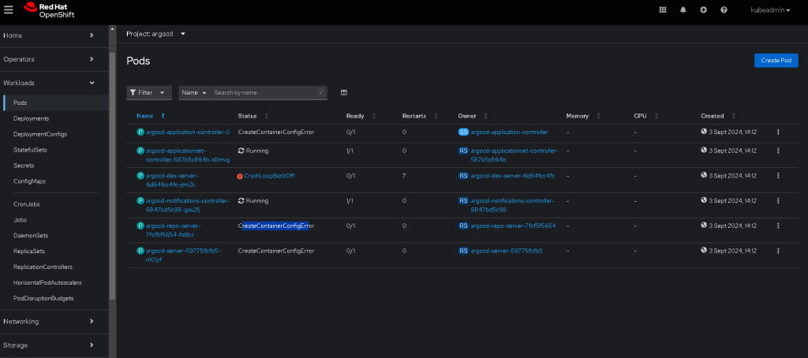
it is unable to get turned on
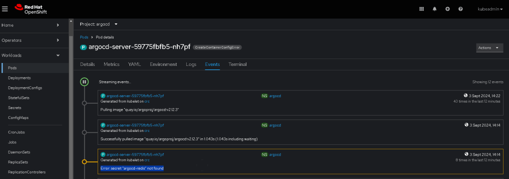
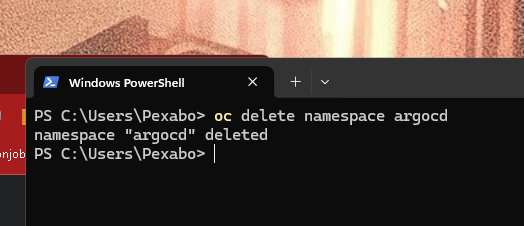
update this and make it serve from a different endpoint >
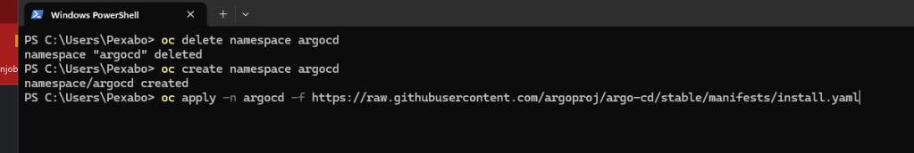
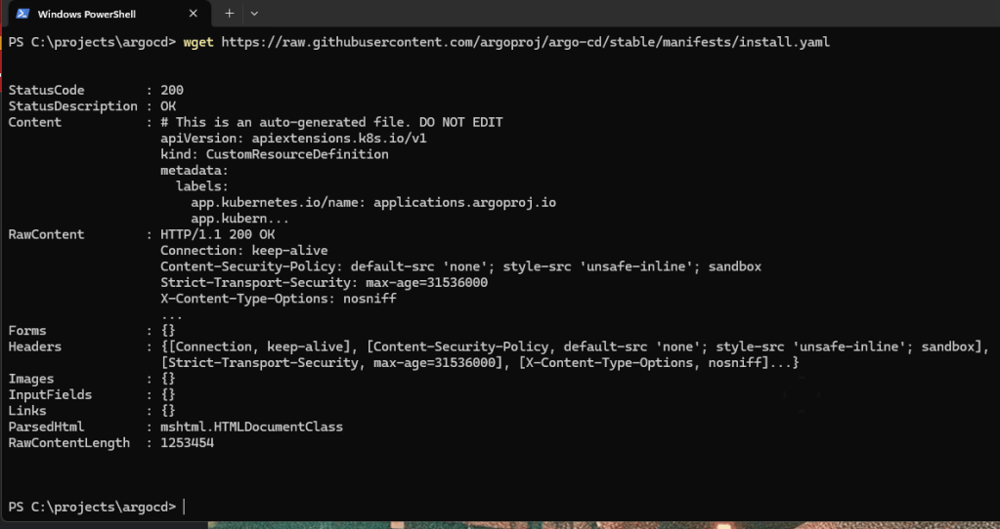
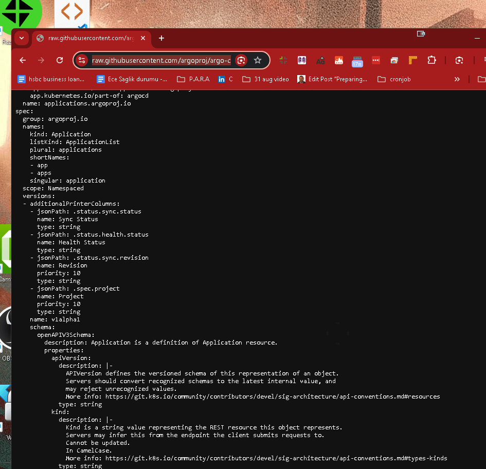
Argo cd is way too long for gpt
Coming back to the manager >>> why he says helm has a point !#
Setting up Argo CD on OpenShift using Helm involves several steps. Below is a guide to help you through the process:
Prerequisites
-
OpenShift Cluster: Ensure you have an OpenShift cluster up and running.
-
Helm: Ensure Helm is installed on your local machine. You can install it using the instructions from the official Helm documentation.
-
Access to OpenShift CLI: Ensure you have the
occommand-line tool installed and you are logged in to your OpenShift cluster.
Steps to Install Argo CD Using Helm
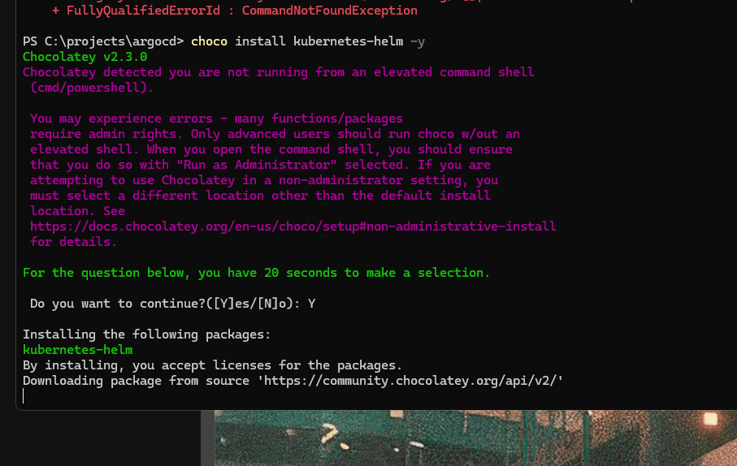
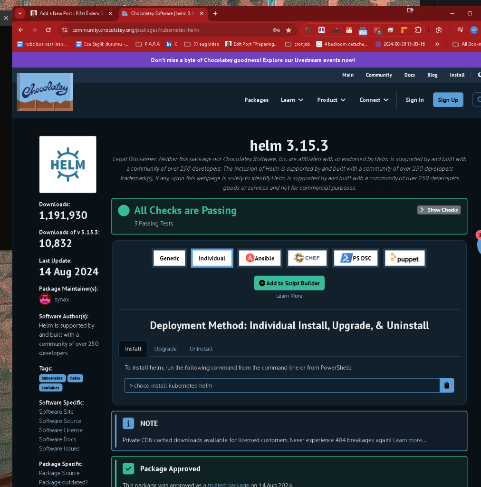
- Add Argo CD Helm Repository First, you need to add the Helm repository that contains the Argo CD charts:
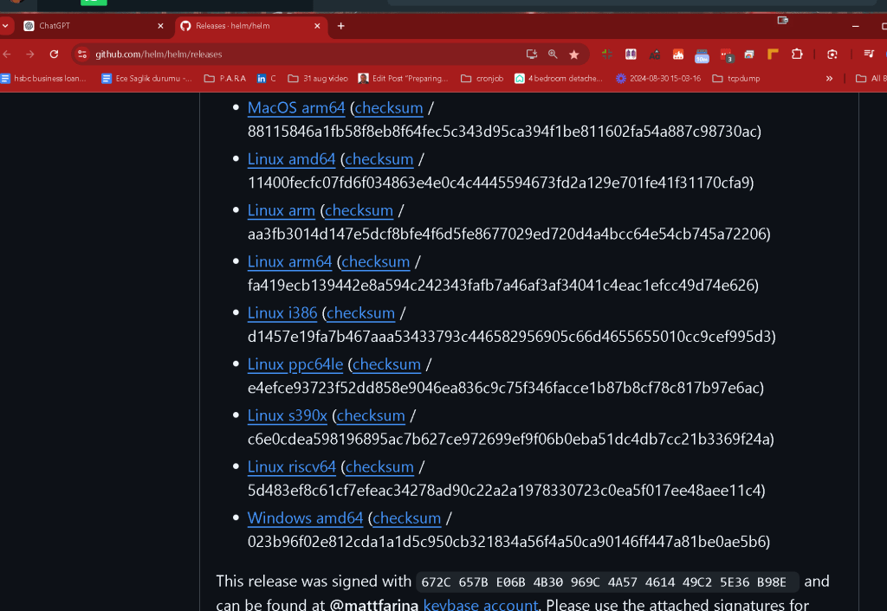
choco would the main tricks in the background for workstation variables
helm repo add argo https://argoproj.github.io/argo-helm
helm repo update
admin install
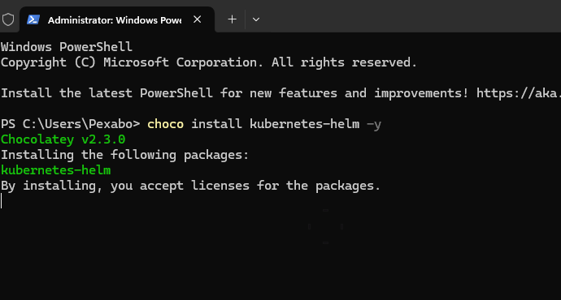
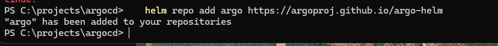
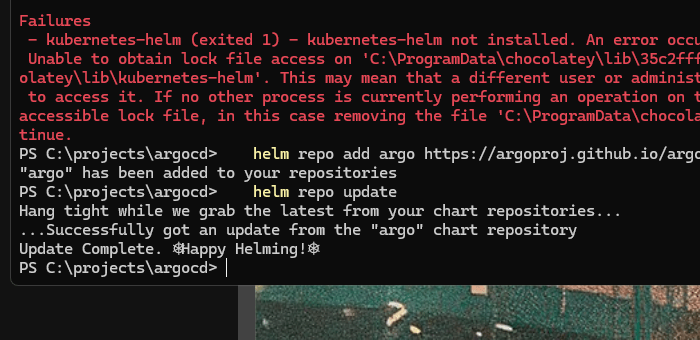
- Create a Namespace for Argo CD It's a good practice to create a separate namespace for Argo CD:
oc create namespace argocd
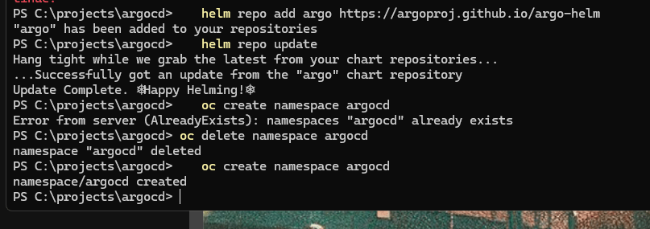
- Install Argo CD Using Helm You can now install Argo CD using Helm. Adjust the
--namespacevalue if you used a different namespace in the previous step:
helm install argocd argo/argo-cd --namespace argocd
This command will deploy Argo CD in the argocd namespace.
PS C:\Users\Pexabo> helm install argocd argo/argo-cd --namespace argocd
Error: INSTALLATION FAILED: Unable to continue with install: CustomResourceDefinition "applications.argoproj.io" in namespace "" exists and cannot be imported into the current release: invalid ownership metadata; label validation error: missing key "app.kubernetes.io/managed-by": must be set to "Helm"; annotation validation error: missing key "meta.helm.sh/release-name": must be set to "argocd"; annotation validation error: missing key "meta.helm.sh/release-namespace": must be set to "argocd"
PS C:\Users\Pexabo>
It looks like you're trying to install Argo CD using Helm, but the installation is failing because there are pre-existing CustomResourceDefinitions (CRDs) in your cluster that do not meet Helm’s ownership requirements. Here’s how you can resolve this issue:
Understanding the Error
The error message indicates that the CRDs already exist in your Kubernetes cluster and have labels and annotations that do not conform to what Helm expects. Specifically, Helm is expecting these CRDs to have certain labels and annotations that are used for tracking the Helm release.
Possible Solutions
- Remove Existing CRDs:
If you don’t need the existing CRDs and you’re okay with removing them, you can delete them and then try installing Argo CD again. Be cautious with this approach as it might affect existing deployments that use these CRDs.
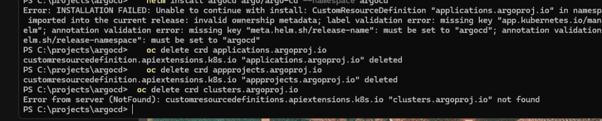
oc delete crd applications.argoproj.io
oc delete crd appprojects.argoproj.io
oc delete crd clusters.argoproj.io
After deleting the CRDs, try installing Argo CD again with Helm:
helm install argocd argo/argo-cd --namespace argocd
- Upgrade Existing Release:
If the CRDs were previously installed by another Helm release, you might need to upgrade or reconfigure the release. Check if there’s an existing Helm release:
helm list --all-namespaces
If you find an existing release, you might need to upgrade it or uninstall it before reinstalling. For example:
helm upgrade argocd argo/argo-cd --namespace argocd
Or uninstall the existing release:
helm uninstall argocd --namespace argocd
- Install CRDs Separately:
You can manually install the CRDs before installing Argo CD via Helm. First, download the CRD definitions:
kubectl apply -f https://raw.githubusercontent.com/argoproj/argo-cd/stable/manifests/crds.yaml
Then, install Argo CD with Helm:
helm install argocd argo/argo-cd --namespace argocd
- Check Existing CRD Ownership:
If you suspect the existing CRDs were created by Helm but are missing the required metadata, you might need to correct the labels and annotations manually. For example:
kubectl annotate crd applications.argoproj.io meta.helm.sh/release-name=argocd
kubectl annotate crd applications.argoproj.io meta.helm.sh/release-namespace=argocd
kubectl label crd applications.argoproj.io app.kubernetes.io/managed-by=Helm
However, this approach is risky and might lead to inconsistencies, so it’s generally safer to use one of the other methods.
Summary
Choose the approach that best fits your situation. If you are working in a development or testing environment where it’s safe to delete resources, removing and reinstalling is often the simplest solution. In production environments, careful consideration and testing are crucial to avoid disruptions.
- Verify the Installation Check the status of the Argo CD pods to ensure everything is running correctly:
oc get pods -n argocd
You should see the Argo CD components like argocd-server, argocd-repo-server, etc.
- Access Argo CD UI By default, Argo CD's API server is exposed via a Kubernetes service of type
ClusterIP, so you need to expose it to access it externally. Here’s how you can create aRoutein OpenShift:
oc expose service argocd-server --name=argocd --namespace=argocd
Get the URL of the Argo CD server:
oc get route argocd --namespace=argocd
You should see an output with the HOST/PORT which you can use to access the Argo CD UI.
- Obtain the Initial Admin Password Argo CD generates an initial admin password which is stored in a Kubernetes secret. Retrieve it with the following command:
oc get secret argocd-initial-admin-secret -o jsonpath='{.data.password}' --namespace argocd | base64 --decode
The output will be the initial password for the admin user.
-
Login to Argo CD Open your browser and navigate to the URL obtained from the route. Use the
adminusername and the password you retrieved to log in. -
Configure Argo CD After logging in, you can start configuring Argo CD by connecting it to your Git repositories and setting up applications. Refer to the Argo CD documentation for more details on configuring and using Argo CD.
Optional: Helm Chart Configuration
If you need to customize your Argo CD installation, you can create a values.yaml file with your configuration and use it during installation. For example:
server:
service:
type: LoadBalancer
ingress:
enabled: true
hosts:
- host: argocd.example.com
paths:
- /
Then install Argo CD with your custom values:
helm install argocd argo/argo-cd --namespace argocd -f values.yaml
This guide provides a basic setup. Depending on your requirements, you might need additional configuration, such as setting up authentication providers, configuring RBAC, or integrating with other tools.
It looks like you've successfully deleted some of the CRDs related to Argo CD, but you’re encountering a similar issue with another CRD: applicationsets.argoproj.io.
Here's a step-by-step approach to resolving this:
1. Delete the Remaining CRD
If you encounter an issue with applicationsets.argoproj.io or any other related CRDs, you might need to delete these as well:
oc delete crd applicationsets.argoproj.io
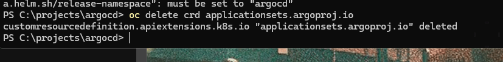
Make sure to also check for other CRDs that might be causing conflicts:
oc get crds | grep argoproj.io
oc get crds | Select-String "argoproj.io"
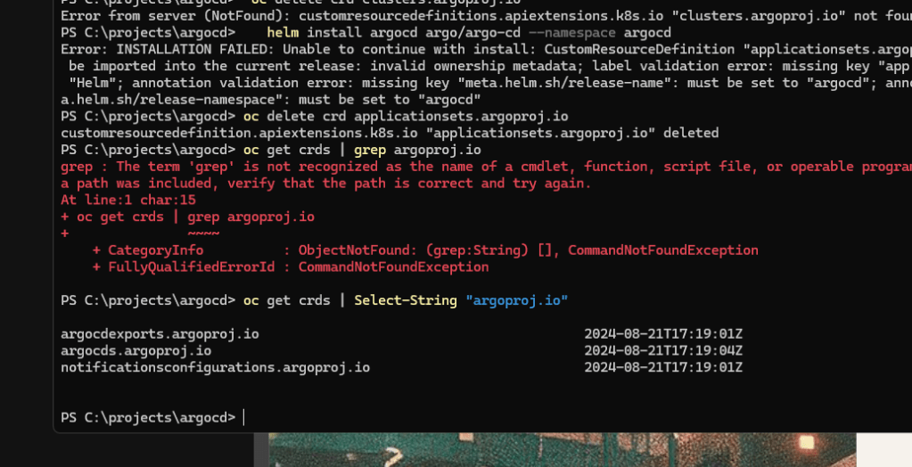
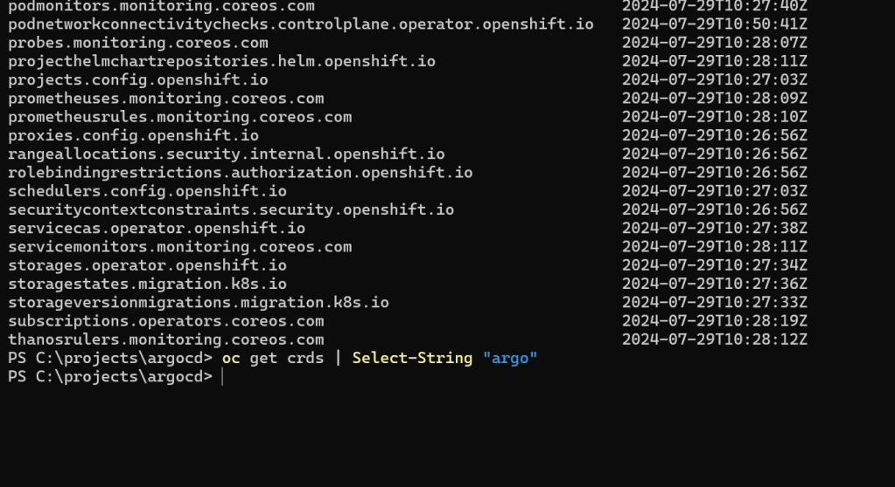
If you're looking to search for the string "argo" within files using PowerShell and you want to include results where "argo" is part of a larger word (like "embargo" or "argonaut"), you can use the following command:
Get-ChildItem -Recurse | Select-String "\bargo\b" -SimpleMatch
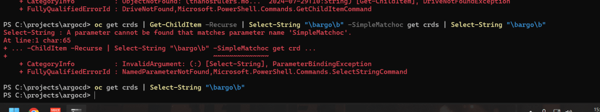
Explanation:
-
Get-ChildItem -Recurse: Retrieves all files and directories recursively from the current directory. You can specify a directory path if needed, such asGet-ChildItem -Path "C:\MyDirectory" -Recurse. -
|: Pipes the output fromGet-ChildItemtoSelect-String. -
Select-String "\bargo\b": -
The
Select-Stringcmdlet searches the content of the files for the specified pattern. -
The pattern
"\bargo\b"uses regular expressions (\bis a word boundary) to find occurrences of the exact word "argo". If you want to match "argo" as a substring within other words, remove the\bboundaries. Alternatively, if you want to match any occurrence of "argo" regardless of whether it's a standalone word or part of a larger word:
Get-ChildItem -Recurse | Select-String "argo"
Matching Only "argo" as a Whole Word
If you specifically want "argo" as a whole word, without surrounding context, use:
Get-ChildItem -Recurse | Select-String "\bargo\b"
The -SimpleMatch parameter is not needed when using \b with Select-String in a regex context, as the command will correctly interpret word boundaries.
By default, Select-String outputs the file path and line of text containing the match, which should help you locate instances of "argo" in your files.
2. Verify CRD Deletion
After attempting to delete the CRDs, verify that they are no longer present:
oc get crds
Ensure that no remnants of Argo CD-related CRDs remain.
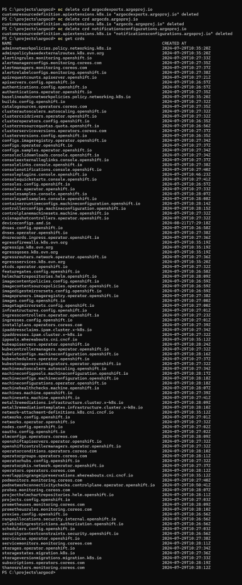
3. Check for Residual Resources
Sometimes, deleting CRDs might not clean up all the resources associated with them. Ensure no resources related to these CRDs are still present:
oc get applications
oc get appprojects
oc get clusters
oc get applicationsets
If there are any resources of these types, you should consider deleting them if they’re no longer needed.
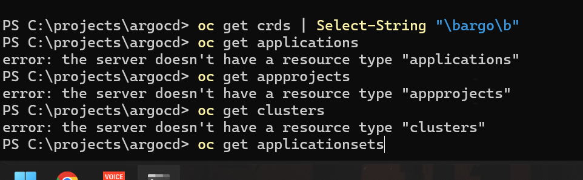
4. Install Argo CD Again
Once you have removed the conflicting CRDs and ensured no residual resources are present, try installing Argo CD again:
helm install argocd argo/argo-cd --namespace argocd
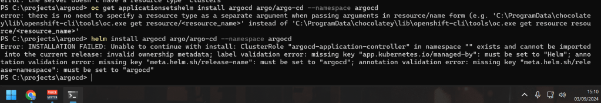
5. Manual Installation of CRDs
If you continue to face issues, you might try manually applying the CRDs before running the Helm install:
kubectl apply -f https://raw.githubusercontent.com/argoproj/argo-cd/stable/manifests/crds.yaml
Then, attempt the Helm installation again:
helm install argocd argo/argo-cd --namespace argocd
Summary
-
Delete any remaining CRDs associated with Argo CD.
-
Verify that no residual resources are left in your cluster.
-
Install Argo CD again using Helm after cleanup.
-
If needed, apply CRDs manually before the Helm install.
If issues persist, double-check that you’re working in the correct namespace and that no other Helm releases or installations might be conflicting.
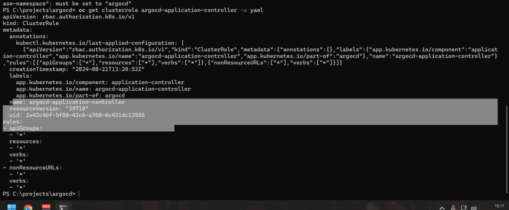
You're encountering two distinct errors while trying to install Argo CD with Helm and apply CRDs using oc apply.
1. Helm Installation Error
The error during the Helm installation:
Error: INSTALLATION FAILED: Unable to continue with install: ClusterRole "argocd-application-controller" in namespace "" exists and cannot be imported into the current release: invalid ownership metadata; label validation error: missing key "app.kubernetes.io/managed-by": must be set to "Helm"; annotation validation error: missing key "meta.helm.sh/release-name": must be set to "argocd"; annotation validation error: missing key "meta.helm.sh/release-namespace": must be set to "argocd"
Explanation and Solution:
This error occurs because there are existing Kubernetes resources (like ClusterRole "argocd-application-controller") that were not initially created by Helm or have missing Helm-related metadata. Helm requires specific labels and annotations to track resources it manages.
To resolve this:
- Check for Existing Resources: Find the existing resources that are causing conflicts.
kubectl get clusterrole argocd-application-controller -o yaml
-
Delete or Update the Existing Resources:
-
Delete the Existing Resources (if you do not need them or are sure they can be recreated without issues):
bash kubectl delete clusterrole argocd-application-controller -
Update the Annotations and Labels (if you want to retain the existing resources but make them Helm-compatible):
bash kubectl annotate clusterrole argocd-application-controller meta.helm.sh/release-name=argocd --overwrite kubectl annotate clusterrole argocd-application-controller meta.helm.sh/release-namespace=argocd --overwrite kubectl label clusterrole argocd-application-controller app.kubernetes.io/managed-by=Helm --overwrite -
Retry Helm Installation:
After addressing the conflicting resources, try the Helm installation again:
helm install argocd argo/argo-cd --namespace argocd
2. oc apply Error
The error when trying to apply CRDs from a URL:
error: unable to read URL "https://raw.githubusercontent.com/argoproj/argo-cd/stable/manifests/crds.yaml", server reported 404 Not Found, status code=404
Explanation and Solution:
This error indicates that the URL for the CRDs file does not exist (404 Not Found). This can happen if the file has been moved or renamed in the repository.
To resolve this:
-
Find the Correct URL: Visit the Argo CD GitHub repository to locate the current CRDs file URL.
-
Apply the Correct CRDs:
-
Once you have the correct URL, use the
oc applycommand with the updated URL:
bash oc apply -f <correct-url> -
For example, if the correct URL is
https://raw.githubusercontent.com/argoproj/argo-cd/v2.8.0/manifests/crds.yaml, run:
bash oc apply -f https://raw.githubusercontent.com/argoproj/argo-cd/v2.8.0/manifests/crds.yaml
By addressing these two issues—removing or updating existing resources to allow Helm to manage them and using the correct CRDs URL—you should be able to install Argo CD successfully.
decision reset the crc and start fresh !
Imported from rifaterdemsahin.com · 2024